Fab Lab Protocol 2017-2018
Spaces
FabLabs are comprised of several areas with distinct uses
P59 Fab Lab Pujades 59
- Central Space (Clean Area): A place to work on assembling your project together in a spacious, calm and clean area. It is forbidden the use of power tools and noisy/dusty machines here.
-
CNC / Wood workshop (Dusty Area): A place to work with noise and dust. This is the place to use the CNC Milling (ShopBot MTC on the booking system), wood power tools (Jigsaw, Circular saw, Belt sander, Router, Circular sander, Column driller, etc… on request), and some hand tools (Hammer/ Drill/ Saw/ Rulers/ Cutters/ Chisels, on free access). All the people who want to use the machines in this area should wear the proper clothing and follow the security measures at all times (see General Safety section)
-
Laser Area: A place to work with laser cutters. This is the place to use both Laser Cutters (Epilog XT Legend 36 + LaserPro Spirit GE on the booking system). Be careful to avoid looking at the laser beams and keep the door closed until total extraction of smoke, always stay next to the machine and in case flames are produced press the red button and call somebody from the staff. Don’t stay in this area if you don’t use the machines. Please remove all your leftovers pieces after using the machines.
- Robot Area: A place to experiment with automation. Due to the inherent risk encountered in this area, students are requested to access it ONLY after approval AND under supervision of the staff.
- 3D printing and electronics room (Delicate Area): A place to work on smaller objects. This is the home for 3D printers and the place to work with electronics tools (Power supply, soldering iron, potentiometer, etc… ). Keep this small area clean and free for others to use.
- Material Lab (Dirty Area): A place to work with dirty and toxic materials (See toxic materials section below). This is the place to do any molding + casting, material experiments, paintings etc..
- Staff office: Students are not allowed to work or enter in this area, it is reserved for staff only. Toxic Materials: Polyester Resin/Epoxy Resin/Composites/Molding and Casting products/Disolvents/Contact Glue (If you're not sure about a material please contact somebody from the staff)
P102 Fab Lab Pujades 102
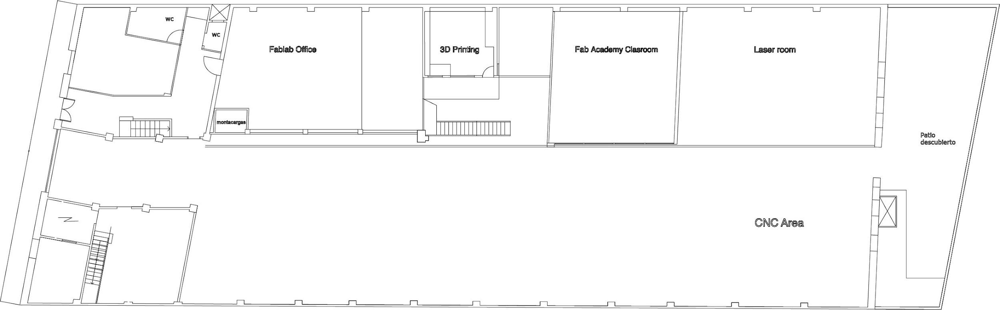
- Laser room: Only students who have a machine booking are allowed to use this area under staff supervision during the Master student open hours.
- CNC area: Students are allowed to use this area only under staff supervision and during Master student open hours.
- Fab Academy classroom: Students are not allowed to work in this area, it is reserved for staff and Fab Academy students only.
- Fab Lab office: Students are not allowed to work or enter in this area, it is reserved for staff only.
- 3D printing room: Only students who have a machine booking are allowed to use this area under staff supervision during the Master student open hours. People not using the machines are not allowed in any of the Fab lab Areas: Please keep the space free for others.
Tools and machines have each a designated area: Please keep it organized for others.
Non-respect of these rules, leading to disorganization in the Lab, will be penalised. (see chapter "Penalties" at the end of this document)
Machines
IAAC offers student access to the following machines:
On request :
-
Power tool set for wood (Jigsaw, Circular saw, Orbital & Belt sander, Router, Drill. etc...)
-
Electronic equipment (Camera, Tripod, Lights, Projectors etc)
Via booking system (min 24h before) :
- Laser Cutters - Epilog XT Legend 36 + LaserPro Spirit GE
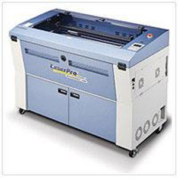
- CNC Milling machine – ShopBot MTC
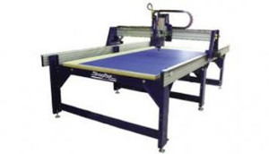
- 3D printers - Zortrax (x2)
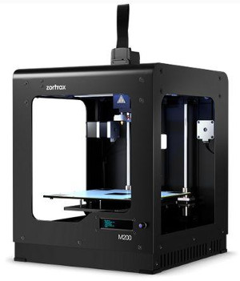
- 7 Axis Industrial Robotic Arm - Kuka KR150 / L110
Via email (min 48h before):
- Laser Cutter - Multicam 2000

- CNC Milling machine – ShopBot ATC
- CNC Precision Milling machine - Monofab SRM 20 (x2)
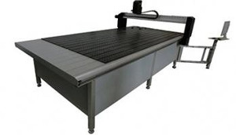
- Vinyl cutter GX-24 Camm Servo
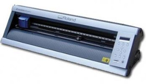
- Vacuum Press
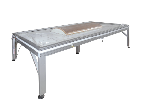
- Large Oven
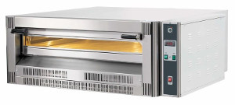
- Bandsaw for Metal
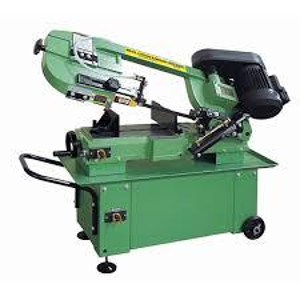
- Power Tool set for metal
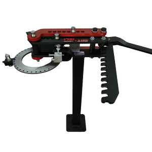 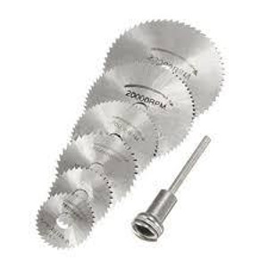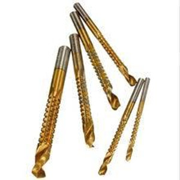
Basic Tools in free access
Some basic tools (Rulers, Clamps, Hammers, etc…) are accessible in the dusty/CNC area as a complement of your student’s toolkit.
Students are requested to leave the tools used in his appropriate place marked in the designated area of their shelves.
Tools should remain within the fablab area, in their respective room. Taking tools out of the lab without explicit permission will be penalised (see chapter "Penalties" at the end of this document
Power Tools and equipment on request
Power tools (Drill, Sander, ScrewDriver etc..) and some electronic equipment (Camera, power supply, Tripod, etc...) are available by request from the fab lab assistant. To keep the lab tools well organized and the process safe, students should request help from fabrication assistants.
The students should give their ID as a deposit for the tool. This will be returned after student brings the tool back. The process includes the registration in our database of this equipment borrowing.
All borrowed tools need to be given back in the timeframe agreed. Typical timeframes:
-
Manual & Power tools = by the end of the day (before 8 pm)
-
Equipment = within 24 hours
In case a student fails to do so he or she will be responsible to replace the item. Any misuse, loss or damage have to be noticed by informing one of the fabrication assistants. Failing to do so will be considered as a fault (See Penalty section).
Machines via Booking System
Some dedicated digital machines (Laser, 3D printer, etc..) are available to students via booking system.
  The booking procedure is as follows:
-
Before accessing the online booking system, it is obligatory to contact Iaac student coordinator first: send the files you need to print, cut or mill to fabrication.support@iaac.net together with a description of the material to be processed.
-
Once your files are checked, you will receive an email with feedback and further steps, including the approx time slot you will need, only then can you book a slot on the booking system.
Failing to respect this procedure will invalidate your booking and it will be cancelled by the staff. Repetitive misuse of the booking system will be considered as a fault (See penalty section).
Booking Instructions
To make your reservation, go to https://iaac.simplybook.it/v2/
1º - Select the duration of the service you need depending of the machine (30 min, 1, 2, 3, 4 hours).
2º - Select the machine you want to use: milling machine, laser cutter, 3D printer or Kuka.
3º - Select the date and time: first, click the desired day in the calendar and you'll see available time slots on the right, click the one that suits you.
4º - Fill in your name (use your full, real name, otherwise the slot will be cancelled), email and phone number.
5º - To finish, click "BOOK NOW".
Important:
-
To confirm your booking you need to find the reservation code in your email ( you should get the confirmation email right away), paste it into the booking system, click "confirm".
-
The person who makes the reservation is the person who will be allowed to use the time slot. The reservation are not transferable to other student without advising staff. Failing to do so will invalidate the booking.
-
Punctuality is important to let everyone use the space. You are requested to come 10 min before your reservation to load your file and prepare the material. Delay from students will shorten his fabrication time on the machine and will force us to quit the job at the end of the reservation time, even if not finished. More than 15min delay will cancel the reservation. Missing your reservation without notifying fab lab staff will be considered as a fault (See the Penalties chapter).
-
Bring your own material (unless your using 3D printers, see chapter "Supplies")
-
Use the machine safely (see chapter "Safety")!
Other machine and tools via email request
IAAC owns many other tools that students are allowed to use if available (not already in use by other IAAC activities) and if staff is available for support (most of these machines need specific staff supervision)
If you wish to use one of this specific tools, please send us an email to fabrication.support@iaac.net explaining your needs and your schedules.
Plan well ahead, and make your request at least 48h before needed.
We are happy to offer the best possible for your project but can’t guarantee that those machines are available.
Contact
Any doubt, contact your FabLab Manager: Ricardo Valbuena (ricardo.valbuena@iaac.net)
Support hours
Fabrication experts are available for project review within specific support hours every week. See masters calendar for precise schedules "Fabrication Support Hours"
These are hours in which the experts are available to schedule an appointment and help you in your project development and fabrication planning.
MAA 01 support will be taken care by Raimund Krenmueller ; MAI, OTF, MACT and MAA 02 support will be taken care by Kunaljit Chadha :
In order to have a meeting with Raimund or Kunaljit, students have to send an email to the expert (Raimund or Kunaljit) and coordinator in cc (Marco, Maria, Alex M., Valentina), with the following information >
-
A description of your issue/problem
-
A sample of the script / 3D file you are using, additional picture and/or references of previous work are welcome
-
Date and time availability for the appointment (within support hours)
-
Group Members
-
Class context
Emails addresses >
-
MAA 01: raimund.krenmueller@iaac.net, marco.ingrassia@iaac.net
-
MAA 02: kunaljitsinghchadha@iaac.net, mathilde.marengo@iaac.net
-
MAI: kunaljitsinghchadha@iaac.net, valentina.toscano@iaac.net
-
MACT: kunaljitsinghchadha@iaac.net, alex.mademochoritis@iaac.net
Supplies
Students are requested to bring their own materials. FabLab does not provide any material to the students apart from some basic consumable (such as sandpaper, screws, white glue and paper tape) available at the time in the lab.
Here is a list of material and hardware suppliers: http://bit.ly/1MeHIQx
NB: students can have a discount of 10% at SERVEI ESTACIO, using the code 10906 at the checkout. http://www.serveiestacio.com/
In the case of 3D Printer, Material is purchased by Fablab and charge to the students according to the final quantity of material used (price per gram).
Storage
Due to the amount of space available, there is no permanent storage.
Students are allowed to store material only if it will be used in the same month. Everything should be stored in boxes with the name of the student / Name of the class or project and date of the beginning of storage. If this is not clearly visible on the box, this material may be displaced or used.
The institution is not responsible for the materials left in the space and can’t guarantee the safety or integrity of your tools, project, and material if not properly stored. To avoid any issue with a lost or broken object, please get in touch with any Fabrication assistant to find a proper solution.
Additionally, IAAC FabLab Staff has specific storage spaces that should be respected. Never pick an item from this shelves in self-services. In doubt, always ask before.
-
3D Print Material shelves: A place to store 3dPrint materials. To be used only under FabLab Staff supervision. Students are requested to leave the 3d print materials used in the appropriate place marked in the 3d print shelves. Please keep the materials well organized.
-
Material Lab Shelves: A place to store mixing, casting and cleaning material for the lab. Access only under Staff authorization and supervision.
-
Kuka Room Shelves: A place for Robot related tools. Staff only, Students are forbidden to take any items from this area.
-
Storage room: Staff only, Students do not have access to this area.
Safety
Use of this facility requires the use of standard safety precautions at all times. This includes but is not limited to:
-
Never work alone
-
Be aware of how to stop the machine to be used, and how to call for help before starting to use any machine.
-
All students must wear safety glasses while using :
-
Milling machine

- Circular saw/Compound saw
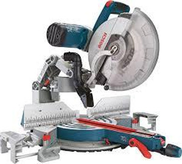
- Column Drill

- Jig-saw
- Angle Grinder
- Dremel
- Sanding Machines.
-
Ear protection and dust masks are available and should be worn when necessary.
-
Safety glasses are the student’s responsibility, students must not work in this space without them, if there aren’t any available when you enter to the shop, it’s no excuse to work without them. Ask for them to the Fabrication assistants!
-
Only closed-toe shoes should be worn in the lab areas.
-
Long hair has to be tied up. Loose clothes should be tightened, and dangling jewelry should be removed before entering the lab areas. These can get caught on the tools or machines.
-
Wear a dust mask when performing grinding or other operations that may generate fine airborne particles.
-
Do not leave tools on the machine when you finish. Put them in their allocated place.
-
Always be aware of the safe operation of the machines. If you're unfamiliar with a particular machine, consult the workshop staff before using it.
-
Do not make parts in haste. Plan each job and procedure in advance. Determine what material and special tools may be needed.
-
Use the dustpan or vacuum to remove chips from a machine while it is not running; this is NOT to be done by hand.
-
Each student is required to report all issues, accidents, and tool breakages to Ricardo Valbuena or the fabrication assistance (If neither are available, please report this to mathilde.marengo@iaac.net)
-
No food or drinks are allowed in the workshop areas.
-
Respect the machines and what they can (and can’t) do; never, ever use the machines for anything other than what they were designed to do, and never tamper, alter, or play with the equipment!
-
All students are required to clean the machine and sweep the work area before leaving the lab areas.
(You can check more in detail Safety section in: http://wiki.fablabbcn.org/Main_Page)
Cleaning/Maintenance
In the interest of promoting cleaning and safe workplace, Students are required to clean all machines after use.
In the special case of;
-
Shopboot: includes dust anywhere on or under the machine, and on top of the control-box and computer.
-
Jigsaw: you should clean it from dust and replace broken blades
-
Drill Press : Clean all the surface of the machine, table and surroundings
-
Compound Circular saw: Cleaning surface, on top of the machine and table.
-
3D Printer: Cleaning the machine and removing small pieces from the surface.
-
Laser cutter: After using the machine remove the material and clean the top of the bed, in case of small pieces remove the bed and vacuum the left overs (call somebody from the staff for support removing the bed)
In the case of finding a dirty machine prior to commencing your work, please advise staff and clean it before starting the job. Working in a dirty environment is dangerous, risks compromising the machine’s safety or operation and will not be tolerated.
After use machines, students are requested to leave the tools in their appropriate storage space. Correct Storage of the tools is one the key aspects, thus keeping the workplace clean and safe. Failing to respect this procedure will be considered as a fault (See the sanction chapter).
To reduce the number of waste materials and trying to promote activities on recycling and reuse it is important to separate and cut up all materials after use. Students are requested to cut up materials in different formats with the objective of proper storage. Any material with a value of more than 5€ should be kept. Wood leftovers should be cut into rectangular pieces.
In case of recycling material from the Laser cutter, it should be cut into standard sizes like A1/A2/A3/600*300mm to facilitate storage.
Penalties
In order to ensure clean, safe and healthy areas and to reduce the number of risks of regulatory failures, the Fab Lab Protocol establishes Basic regulation penalties.
The following misconducts will be penalised :
-
Dangerous behavior, including disrespecting the safety measures recommended in this document, will incur a penalty
-
Avoiding cleaning responsibility, especially after the use of tools and machines, will incur a penalty.
-
Delay or not attending in any booking slot will incur a penalty.
-
Displacing / Borrowing tools outside of the lab without having been registered by a Fab Lab staff will incur a penalty.
-
Breaking a tool or machine without advising the Fab Lab staff, will incur a penalty.
-
Use of the lab without supervision will incur a penalty (the Fab Lab is fitted with a surveillance system).
The first act of misconduct will trigger a formal warning through an email communicating the specific misconduct and requesting more awareness.
The second act of misconduct will incur a penalty: the student will be prohibited from using the Fab Lab machines for one week.
The third act of misconduct will directly forbid the student’s access to the Fab Lab space until the end of the semester.
Students have to send the file (as soon as the slot is booked to use a machine) to the fabrication assistants to check and prepare the file to run directly without wasting any time. USB drives will not be accepted for reviewing files by the fabrication assistants. This will be strictly enforced.
Every person should have their individual RFID door entry card, which is not transferable. In case of visitors, staff need to to be notified before letting anyone inside the building. Failure to do so, the student will be penalised.
The students are advised not to keep their belongings like coats, helmets and bags obstructing any areas, the function of equipment and movement of people in the building. Failure to do this could incur a penalty